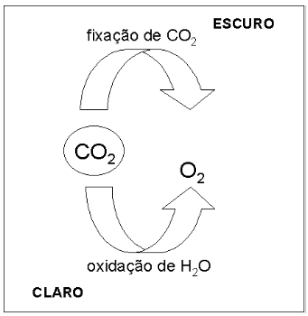
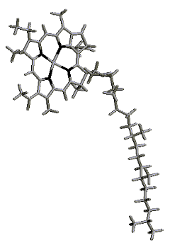
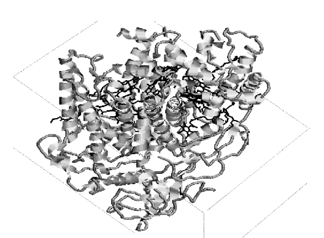
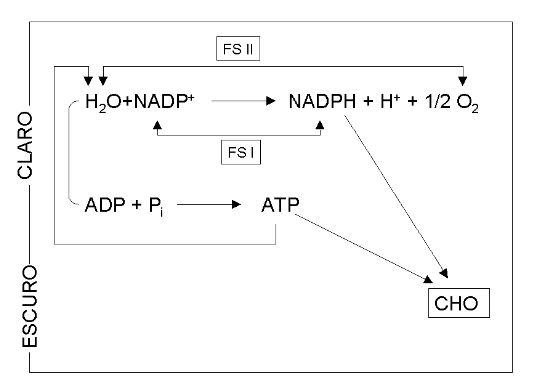
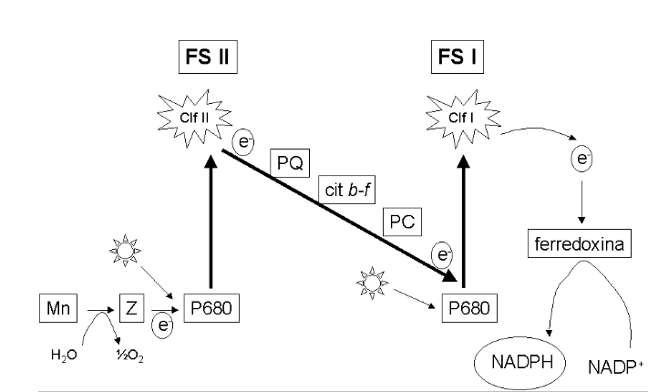

Fotossíntese
Introdução
Em poucas palavras, a fotossíntese consiste em um processo de conversão de energia luminosa em oxigênio e carboidratos. Ocorre em local específico de cloroplastos vegetais, similares morfo-funcionais de mitocôndrias celulares, e divide-se basicamente em dois estágios. O primeiro, que ocorre na presença de luz nos tilacóides, permite a oxidação de água com concomitante formação de oxigênio molecular, ATP e redutor NADPH. O segundo estágio, que ocorre na ausência de luz no estroma, permite o uso dos dois produtos orgânicos anteriores na presença adicional de CO2, resultando na fixação desse último para a síntese de carboidratos, tais como glicose.
Detalhes
O cloroplasto é uma organela fotossintética morfologicamente similar a mitocôndria, e dividido em membrana externa, interna e estroma. Diferentemente daquela, contudo, possui uma estrutura lamelar específica para a produção de ATP e conversão de energia luminosa em química, denominada grana, a qual contém os tilacóides em cuja membrana se processa a tradução do fóton luminoso em energia química pela clorofila. Ao final do processo, a fotossíntese leva a produção de oxigênio e de carboidratos. Em procariontes, como cianobactérias, essa conversão ocorre nas membranas plasmáticas.

A captação da energia solar que inicia o processo fotossintético ocorre em estruturas similares ao grupo Heme dos pigmentos sanguíneos. Essa estrutura, denominada clorofila é formada por um anel tendo o magnésio em seu centro, estando ainda ligada a uma molécula alongada de fitol, por sua vez composta por isoprenóides. A clorofila está sempre ligada a um conjunto protéico, quer livre (clorofilas antenares), quer associado à membrana do tilacóide (fotosistemas), então formando clorofilas de centro de reação. Existem centenas de clorofilas antenares para cada fotosistema.
A clorofila pode absorver a luz em duas faixas de comprimento de onda distintas, ao que se denomina clorofila a, típica de procariotos, como a bacterioclorofila (780 nm), absorção em faixa de 600 a 700 nm, e a clorofila b, com absorção em faixa de 400 a 600 nm. Em eucariotos coexistem ambos os tipos de pigmentos.
 | As reações que ocorrem na presença de luz estão representada abaixo. Em resumo, essas reações envolvem dois fotosistemas, FS I e FS II, conectados entre si por uma cadeia transportadora de elétrons.

Enquanto o FS I produz NADPH utilizável nas reações de fixação de CO2 no escuro, o FS II produz oxigênio, a partir da clivagem de água. Além da água, outros compostos podem ser utilizados para o mesmo fim em diferentes organismos, como H\(_{2}\)S em bactérias sulfurosas, liberando S\(_{2}\) elementar, ou H\(_{2}\)S\(_{2}\)O\(_{3}\) (tiossulfito) ou ainda succinato (alguns fungos).

Além da clorofila (Clf), outros pigmentos participam da fotossíntese, tais como plastoquinona (PQ), plastocianina (PC), mangano proteínas (MN), ferredoxina e citocromos b-f, numa rede de interação dos dois fotosistemas com a cadeia transportadora de elétrons. Em poucas palavras, ocorre uma absorção de fóton no FS II, seguindo-se sua passagem para o centro de reação Cfl II, convertendo-o em feofitina, e o preenchimento do elétron faltoso pela oxidação da água.
Existem 5 estados de oxidação do complexo FS II, denominados estados S1 a S4. O elétron que caminha pela cadeia transportadora atua de forma semelhante no FS I, após a excitação luminosa que ativa o centro de CLf I. A figura final lembra a letra “Z” deitada, o que fornece ao ciclo o nome de diagrama Z.

Existem diversos herbicidas direcionados para a interrupção da fotossíntese em plantas daninhas. Exemplo típico que inibe o crescimento de tais ervas, mas não de grama, é o 2,4-D e o 2,4,5-T. Amitrol inibe a síntese de carotenóides e de clorofila, resultando no branqueamente dos espécimes antecedendo sua morte.
Atrazine inibe a oxidação da água, enquanto que Diuron, a transferência de elétrons do FSII para a PQ. Bigyridylium age no FS I, captando elétrons e, por conseguinte, interferindo em sua transferência. Diquat e Paraquat também são conhecidos inibirem o FS I.